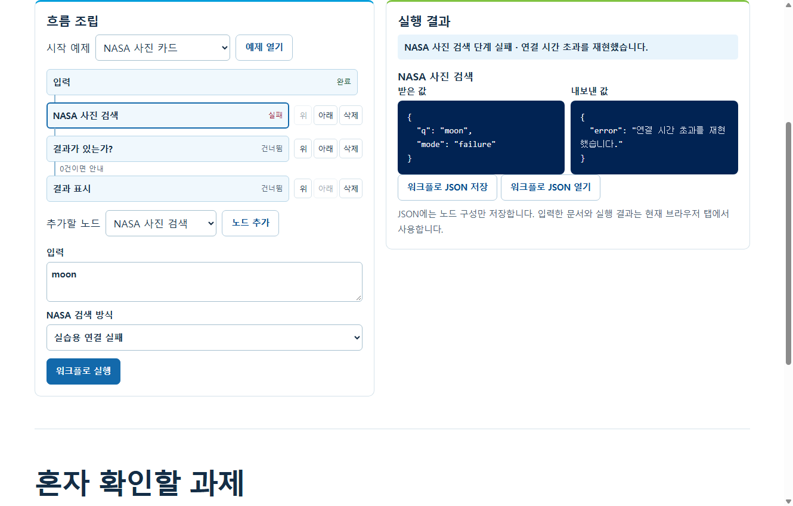

워크플로 실습실
가상 공고의 마감일을 비교하고, 어느 단계에서 결과가 나왔는지 확인합니다.
기본 날짜로 워크플로 실행을 누르면 7일 연장이 나옵니다. 이어서 마감일 비교를 눌러 받은 값과 내보낸 값을 확인하세요.
실행 준비
실행 결과
실행 버튼을 누르면 각 단계의 상태를 볼 수 있습니다.
입력
받은 값
실행 전
내보낸 값
실행 전
저장 파일에는 상자 이름과 실행 순서가 담깁니다. 입력값과 결과는 따로 기록할 수 있습니다.
실행 순서
위에서 아래로 실행합니다. 상자를 누르면 실행 결과에서 그 단계가 주고받은 값을 볼 수 있습니다.
같은 날짜와 빠진 날짜 테스트
기존 마감일은 2026-12-10으로 두고 변경 마감일만 바꿉니다. 각 경우에 어느 상자까지 실행되는지 비교하세요.
| 입력과 예상 결과 | 실행 경로 | 기록에서 확인할 값 |
|---|---|---|
2026-12-17 · 7일 연장 | 입력 → 날짜 확인 → 마감일 비교 → 결과 표시 | 마감일 비교에서 changed: true, differenceDays: 7 |
2026-12-10 · 마감일 그대로 | 네 단계 모두 완료 | 마감일 비교에서 changed: false, differenceDays: 0 |
| 변경 마감일 비우기 · 안내 문구 | 날짜 확인에서 실패. 비교와 결과 표시는 건너뜀 | 날짜 확인에서 입력 안내를 담은 error |
날짜 확인 단계가 두 값이 유효한지 검사한 뒤 일수를 계산합니다. 누락 안내를 받았다면 날짜를 입력하고 다시 실행합니다. 비교 상자의 changed는 변경 여부이고 differenceDays는 일수 차이입니다.
한 걸음 더 · NASA 공개 API에서 0건과 연결 실패 구분하기
- 시작 예제 → NASA 사진 카드 → 예제 열기를 누릅니다. 기본 샘플
moon으로 실행해 사진 검색의 받은 값q와 출력의rows를 읽습니다. - 검색 방식을 실습용 0건 응답으로 바꿉니다. 검색은 완료되고,
rows가 빈 목록이어서 결과 확인 상자가 안내 경로를 선택합니다. - 실습용 연결 실패에서는 검색 상자가 실패하고 이후 상자는 건너뜁니다. 실시간 NASA API로 바꾸고
saturn을 넣으면 실제로 검색합니다. 최대 세 건을 받아 첫 사진을 표시합니다.



순서를 바꿔서 생긴 오류도 확인하기
공고 마감일 비교 예제를 다시 연 뒤 마감일 비교 옆의 위를 누르고 실행합니다. 날짜 확인보다 먼저 실행된 비교 단계에서 필요한 값을 못 받아 실패합니다. 같은 상자를 아래로 내려 원래 순서를 복구합니다.
내 워크플로 만들기
반복하는 일 하나를 고릅니다. 어떤 값을 넣는지, 어떤 규칙으로 처리하는지, 무엇을 확인하는지를 한 줄씩 적습니다.
- 구성합니다. 시작 예제에서 날짜 비교, 문서 줄 비교, 목록 필터를 고르거나 빈 흐름을 열어 상자를 추가합니다.
- 두 번 실행합니다. 예시 입력 두 개에 대한 예상 결과를 적습니다. 각각 실행한 뒤 예상과 실제가 맞는지 확인합니다.
- 저장하고 확인합니다. 워크플로 JSON 저장으로
hug-workflow.json을 받습니다. 다른 예제를 열었다가 워크플로 JSON 열기로 저장한 파일을 선택합니다. 불러온 상자 순서를 확인하고 값을 다시 입력해 실행합니다.
예시 · 회의 메모에서 관심 항목 모으기
입력 → 관심 단어만 남기기 → 결과 표시로 구성합니다. 아래 세 줄을 입력합니다. 찾을 단어를 자료로 지정하면 첫째·셋째 줄이, 일정으로 바꾸면 둘째 줄이 표시됩니다.
회의 자료 정리
일정 변경 공지
교육 자료 확인